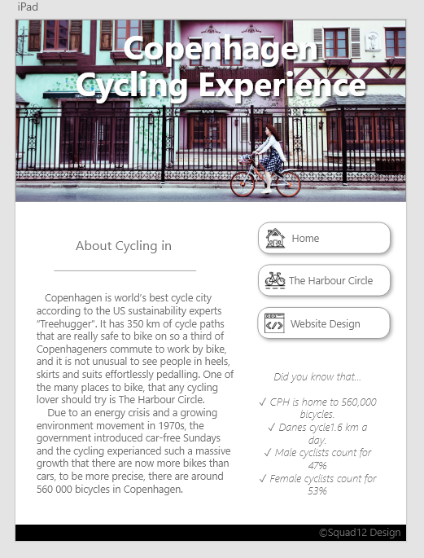
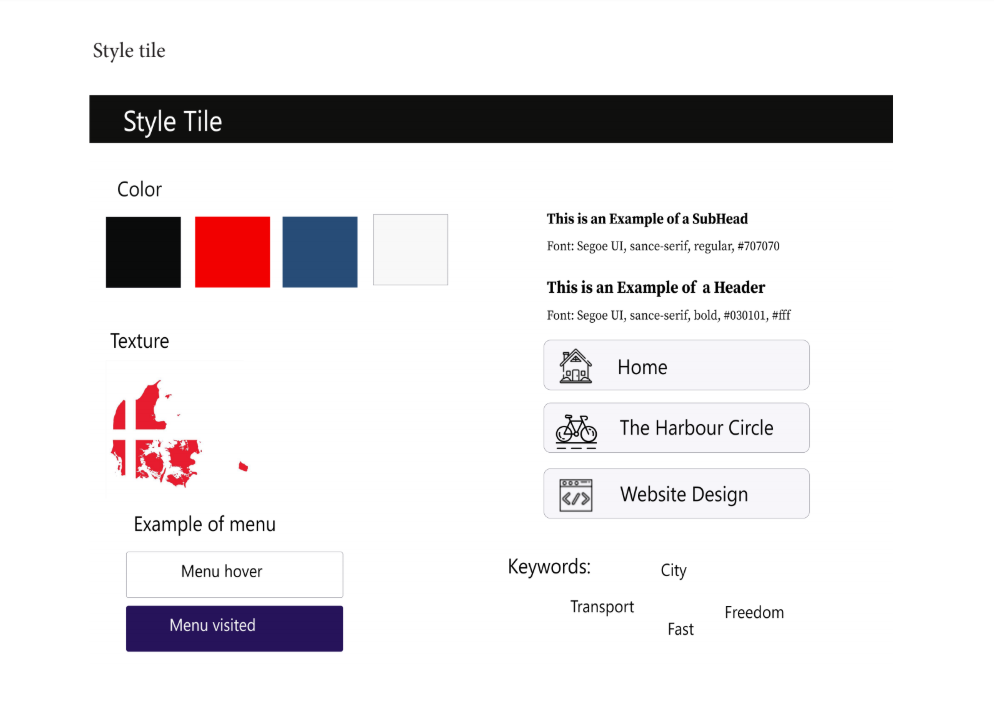

02.01.02 XD Prototype PDF
My role in this project was to deliver a good website and to contribute to the prototype . In this theme I have learned the importance of having a prototype when it comes to group projects and not only, as each one of us can orient themselves in their own works taking in consideration the approximate look of the finite product. Also, I had the chance to experience how easy coding can be when I have everything needed, from pictures to content, typography and color scheme beforehand.
Microsite
The microsite me and my classmate have created is entirely responsive. I was in charge of the responsiveness and the grid layout which was used throughout the entire website. I had the chance to exercise the mobile first approach which is a really good method for creating a website good for desktop, mobile and tablet.
Treatment PDF
In this file there can be found a detailed description of the whole chain of events happening in the video of the microsite. In the ideation process, each could come with their own ideas about how they wish the story to progress and so, we had a unique way of approaching the task at hand. Also, by deciding before where the filming of the video can take place as well as any details needed, no time was lost and the filming took place nice and smoothly.
Documentation PDF
The PDF documentation offers insights on storyboard, which has been of great help in the video editing process as well as the recording, the moodboard, element which contributed to the style tile. As a whole, the website must have a design pattern to follow in order to achieve independency in style. Some of the design principles applied are also available here because they are crucial for each and every website as the aesthetics contribute to the short period of time in which the user scans the page and decides if he or she continues to explore or not.
